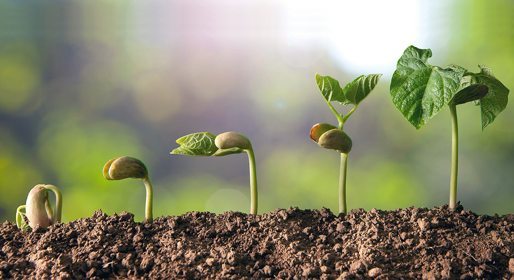

Reprodução das Plantas 🌱
Explorando os Fascinantes Métodos de Reprodução das Plantas e Sua Importância Ecológica

Por Luíza Mattos - 06 de novembro de 2024
Reprodução sexuada e assexuada 🌷
Na reprodução assexuada, novas plantas são formadas sem a fusão de gametas, e os descendentes são geneticamente idênticos. Exemplos:
🌿 Estacas: Partes da planta (galhos ou raízes) geram novos indivíduos.
🌿 Brotamento e Rizomas: Crescimento a partir de estruturas subterrâneas, como em bananeiras e gengibres.
Já a reprodução sexuada nas plantas envolve a fusão de gametas masculinos e femininos.
🌸 Polinização: Transporte de pólen para o estigma da flor.
O que é polinização? 🐝
🌼 Fecundação: Ocorre no ovário, formando uma semente, que gera uma nova planta.
🌱 Dispersão das sementes: Reduz os níveis de predação nas proximidades dos adultos da mesma espécie, aumenta as chances de germinação das sementes e estabelece novos habitats favoráveis à colonização.
Ciclo de vida das plantas 🌿
Germinação - Crescimento - Reprodução - Polinização - Formação do Fruto e Semente - Dispersão de Sementes
Esse ciclo, chamado alternância de gerações, varia entre espécies, como musgos, samambaias e plantas com flores.
🌍 Esses ecossistemas desempenham papeis essenciais na regulação dos processos naturais e na preservação da biodiversidade, e sua destruição afeta tanto o meio ambiente quanto a sociedade humana.